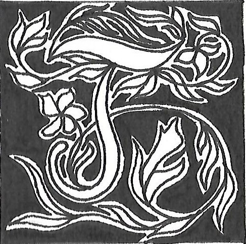

Julie Morel : entre lisibilité et invisibilité
Propos recueillis par Célia Deschamps, Jessy Gris et Lou Laffont
ulie Morel intègre le numérique dans ses recherches artistiques depuis le milieu de ses études à l’école des Beaux-Arts de Lyon. Bien qu’à travers son œuvre elle aborde des pratiques insolites telles que le darknet, elle ne se considère pas comme une activiste qui cherche à revendiquer ou dénoncer une manière d’utiliser les réseaux ; pour autant, elle affirme que tout travail est politique.
C’est de manière subtile, en partant d’objets ordinaires du quotidien, qu’elle parvient à donner une dimension sociale et politique à ses créations. C’est là que réside toute l’in-
telligence de son travail. À mi-chemin entre l’art numérique
et l'art conceptuel elle apporte une note poétique et
sensible à ses réalisations en mêlant différents médiums,
se démarquant des standards de l’art purement numérique. Le langage matérialisé est partie prenante de son travail puisqu’elle le considère comme point de départ de ses projets : il est « une entrée poétique menant aux images ». Julie Morel questionne notre rapport au langage ainsi que notre manière de l’appréhender, se jouant parfois de l’évidence d’une lecture, et laissant alors le public faire son propre
chemin. En effet, une grande partie de ses œuvres est réfléchie autour des notions binaires de lisibilité et d’illisibilité. Julie Morel porte un regard rempli d’humilité sur son travail, et cherche tout autant à questionner et à contextualiser sa pratique qu’elle a partagée avec nous dans cet entretien.
Votre travail illustre la nature des rapports qu’entretiennent le texte et l’image dans une œuvre. À l’aide de différents médiums, vous avez la possibilité d’établir une relation d’égalité entre ces deux supports, ou au contraire d’instaurer une domination de l’un par rapport à l’autre. Dans votre processus de création artistique, le texte est-il un matériau comme un autre, ou est-il au contraire un élément structurant de vos travaux ?
Je vais vous répondre d’un point de vue très spécifique, celui de la personne qui produit et crée des images. Je n’ai pas d’autorité par rapport à cette question. Est-ce que le texte est prédominant par rapport à une image ? De mon point de vue, oui.
Le texte est la condition d’accès à des images, que ce soit à un niveau conceptuel ou structurel, ou parfois, c’est le matériau
lui-même visuel du projet. Pour Mourning Jewellery for Hadali par exemple, éloigné de ma pratique numérique, où j’ai travaillé le tissage de cheveux, le texte a été la condition de choix des matériaux. Je parle de quelqu’un qui se noie : le mot « noyé » devient la manière de choisir l’essence de bois avec laquelle
j’ai travaillé. Ici, nous sommes au niveau de la conception
du projet, le mot détermine le matériau. Mais si l’on souhaite
aborder cette question d’un point de vue structurel, il convient d’aborder la notion du code. Le texte détermine les images
qui apparaissent sur l’écran ou dans l’espace. Parfois même,
la manière dont le projet est codé détermine le dispositif.
Aussi, le texte est un matériau visuel. Lorsque l’on fait du dessin
typographique, il s’agit à la fois d’un travail visuel et structurel, puisque la structure du dessin détermine l’image [fig. 01 : You’ve Been Chosen as an Extra in a Movie Adaptation of the Sequel to your Life, 2010, sérigraphie à l’encre phosphorescente]. Il y a une architecture du texte fondamentale lorsqu’on l’utilise comme matériau. Finalement, en ce qui concerne mon travail, je suis désolée que l’image soit aussi dépendante du texte ; je ne sais pas comment faire autrement. Si le texte est également une entrée poétique qui mène aux images, il n’est pas pour autant
là pour les expliquer : je ne me sers pas du texte comme
un moyen de communiquer quelque chose, je cherche à faire sentir ou ressentir quelque chose via une construction.
De cette manière, cette construction via le texte comme moyen d’expression suppose-t-elle de lier les deux approches que sont la création numérique et la création plastique ?
La création numérique et éditoriale se rejoignent à travers
le travail d’édition. J’envisage la question de l’édition à la fois sur Internet et dans l’espace, puisqu’il m’arrive de faire de la programmation, ainsi qu’un travail de commissariat et d’édi-
tion classique. De mon point de vue, éditer des données, qu’elles soient numériques, papier ou qu’elles soient sensibles, reste philosophiquement la même chose. Nous en revenons
à la question du texte : je n’ai pas l’impression que ce soit
des travaux extrêmement éloignés les uns des autres, même
si leur matérialisation est complètement différente à la fin.
Ils naissent des mêmes questions, à savoir celles de l’édition,
de l’organisation ou de l’interrogation des données quelles qu’elles soient : du son, des images, ou du texte. Je travaille
de manière transdisciplinaire.
Vous plongez le spectateur dans un imaginaire numérique en explorant le langage informatique. Ce type de langage révèle l’incidence du virtuel sur le réel, sur nos appré-
hensions et nos lectures. Nous le constatons à travers la
programmation informatique avec le Œ dans l’autre par exemple, où vous avez crypté le texte Oedipe de Sénèque,
le rendant illisible. Autour de l’œuvre Light My Fire cette fois-ci, vous avez donné à voir trois possibilités de lecture d’un texte imprimé à l’encre phosphorescente [fig. 02 a & b : Light my fire, 2011, Abbaye de Saint-Riquier, papier peint séri-
graphié à l’encre phosphorescente, minuteur]. La première
lecture possible est celle du texte de Georges Bataille
La part maudite, écrite en lettres majuscules, la seconde
est celle de votre commentaire intégré au texte initial, qui lui est écrit en minuscule, et enfin la somme de ces deux textes écrits. De fait, tout le monde n’a pas accès à ces trois niveaux de lecture ; aussi, nous nous interrogeons sur l’accessibilité des œuvres d’art numérique pour le public, et en l’occurrence, de vos créations. Pensez vous que l’art numérique puisse toucher un public éloigné de la culture qui en découle ?
J’ai approfondi le domaine du numérique après mes études aux Arts Décoratifs. À cette époque, l’artiste créait dans son atelier puis exposait dans des galeries, où les œuvres attendaient gentiment leur public. L’atelier implique une forme de tour d’ivoire qui me dérange. Ce modèle ne me correspond pas. J’ai essentiellement créé lors de résidences ; je n’avais pas d’atelier fixe. Mon seul outil en tant qu’artiste était mon ordinateur. Tout de suite, l’idée du réseau m’est apparue afin de diffuser mes projets et que chacun puisse les voir. Cela me plaisait beaucoup mais
la question de l’accès est omniprésente. Qui aurait pu avoir accès à l’adresse internet où étaient diffusées mes réalisations ? Heureusement, Internet n’était pas aussi étendu, il était facile de trouver des projets de Net Art. Il y a un aspect démocratique dans cette démarche qui me tient beaucoup à cœur.
Le travail du numérique pose aussi la question de l’espace.
Au sein du collectif « Incident », il y avait les puristes du Net Art d’un côté, et puis de l’autre celles et ceux qui étaient issus des Beaux-Arts, qui réfléchissaient à la mise en espace. Comment faire exister des œuvres virtuelles dans l’espace ? Quelles
sont les conditions d’existence de ces œuvres-là ? Dans quels endroits ? À l’époque, le milieu de l’art n’était pas du tout prêt
à recevoir des œuvres d’art numérique dans ces espaces institutionnels. Ces questions et ces débats ont été très importants.
Le fait que vous associiez le texte de Bataille à un commentaire personnel dans le but de créer un autre texte est un processus intéressant. Le public des expositions possède-il les clés de lecture pour déchiffrer vos créations ? Est-ce que des textes de présentation accompagnent les œuvres exposées ?
Pour Light My Fire, l’unique clé était les majuscules et les minuscules. Il fallait prêter attention à cela. L’absence de texte explicatif a fait qu’une bonne partie des visiteurs sont passés
à côté du message. Pour Clear Deep Dark, où sont exposés des codes, des adresses IP ou des coordonnées GPS en noir sur fond noir, j’ai une base de données que je n’ai jamais partagée, constituée de photos prises au moment où j’ai posé les œuvres. Il s’agit de petites pièces en céramique réalisées avec la perruque à l’origine du projet. Après l’avoir coupée en morceaux,
j’ai projeté de la porcelaine à l’aide d’un pistolet, avec la volonté de pouvoir laisser quelque chose quelque part mais qui n’ait pas d’impact environnemental. L’idée réside dans le fait de saisir
les coordonnées GPS à l’aide d’un téléphone portable, et de voir où sont disséminées les pièces.
Avec le projet A.F.K ou plus tard avec Clear Deep Dark, la superposition de plans monochromes parcourt l’ensemble du projet. Je n’en parle pas tellement, c’est vrai, mais à Bordeaux, c’est après avoir vu la galerie avec un sol noir que j’ai décidé de travailler avec des tables teintées dans la masse, du papier noir, avec des impressions noires dessus. C’est là que j’ai commencé à faire des tests de sérigraphie noire sur des fonds de noir.
Je me suis souvent demandé si l’objet matériel existait dans
la réalité, cette interrogation est toujours présente dans mes travaux, mais j’ignore pourquoi. En matérialisant quelque chose dans l’espace, je réfléchis toujours à l’impact environnemental global dans lequel une œuvre vient se perdre. Je ne la montre pas plus que je ne la perds, c’est pourquoi je donne aussi des indices au public lorsqu’il se retrouve face à l’œuvre. Il y a définitivement deux lectures : une à distance, et une beaucoup plus proche, à savoir la lumière et l’adresse IP ou des coordonnées GPS. Ce prolongement dans l’espace correspond à cette superposition de plans qui permettent ou non de révéler une lisibilité [fig. 03 : Clear Deep Dark, 2017, The Hawn Gallery, Dallas, USA, sérigraphies et dessins à l’encre conductrice, LEDs et système électrique].
L’aspect presque illisible qu’ont vos œuvres pourrait également compliquer la compréhension de votre travail.
En ce qui concerne mon travail plus personnellement, on m’a souvent dit qu’il était très obscur. Je pense qu’on avait peur que le public ne comprenne pas. Prenons une pièce comme Sweet Dream [fig. 04 : Sweet Dream, 2018, Galerie Duplex, Toulouse]. On m’a régulièrement demandé d’installer un retour caméra dans l’appartement, afin que l’on puisse voir les effets que
produisent ces deux touches. Moi, je trouvais justement inté-
ressant de travailler sur le principe de frustration du spectateur. C’est un point de vue particulier, parce que la frustration
peut être désagréable, mais c’est un point de vue assumé.
Cette proposition traitait également de la thématique du fonctionnement : est-ce que cela marche, ou non ? Par extension, cela questionnait l’idée de croyance : est-ce qu’on croit que cela marche ou non ? En réalité, la pièce fonctionnait réellement. Finalement, j’ai pris des photos chez moi que j’ai diffusées sur mon blog pour ceux qui avaient réellement envie de voir la lampe allumée. Mais cela n’avait rien d’exceptionnel, il s’agit seulement d’une lampe qui s’allume, c’est pourquoi la question de la croyance était importante. Pour le spectateur, ce n’est
pas évident de se retrouver devant deux boutons et d’appuyer
dessus. C’est très minimal et frustrant : il peut se demander si
je me fiche de lui. Alors que moi, j’étais la spectatrice privilégiée qui assistait à la réalisation de l’œuvre. Parfois, la cadence à laquelle la lampe s’allumait puis s’éteignait était très soutenue. Il y avait donc un désir des spectateurs de communiquer malgré ces moyens très minimaux. À certains moments elle ne s’allumait pas, car il n’y avait personne dans l’espace d’exposition ;
à l’inverse, quand des frénétiques appuyaient de manière rapide et répétée sur les boutons, ça faisait fondre le relais
électrique chez moi.
On retrouve sans doute cette idée de frustration dans le Œ dans l’autre [fig. 05 : Le Œ dans l’autre, 2008, module généré et transféré en vidéo]. C’est une frustration qui active beaucoup de questions, que je tente de partager avec le public. Lorsque je
dis que je fais confiance aux spectateurs, c’est que je leur en
demande beaucoup. Pour autant, je leur laisse suffisamment
d’indices pour trouver des clés d’interprétation. Il est possible de faire un travail de lecture, à condition d’être intéressé.
L’idée était-elle de donner à explorer au public en même temps que vous, finalement ?
Tout à fait, il s’agit vraiment d’une prolongation. Avec A.F.K,
il y avait effectivement de nombreuses éditions à emporter.
Chacun pouvait alors poursuivre son exploration devant
son propre ordinateur et avoir accès à de nombreux documents, comme des playlists de musique, des textes… Aujourd’hui,
il en reste peu en ligne.
Vous parliez tout à l’heure de l’origine de votre travail, de la frustration provoquée chez le public, mais aussi de l’impossibilité de traduction de certaines œuvres : cela se ressent à travers votre réflexion sur la lisibilité et l’illisibilité.
Selon moi le langage possède une grande part d’inconnu, même encore aujourd’hui. Noam Chomsky a beau essayer
de nous éclairer, on ne sait toujours pas pourquoi on parle,
ni comment on parle. C’est un véritable mystère ! Mais c’est
un mystère merveilleux. J’ai moi aussi envie de me poser ces
questions. Seulement, souhaitons-nous qu’un mystère soit résolu ? Je ne suis pas sûre. Ce qui est certain, c’est que toute une production d’interrogations et de poésie peut naître de cette réflexion : c’est comme chanter la merveille du langage,
si je peux m’exprimer ainsi. C’est aussi ce qui se joue dans le projet Bataille avec Light My Fire : s’interroger sur la manière
de superposer du langage. Nous trouvions ici les prémices de mes questions sur la notion de version, que j’aborde plus tard dans mon travail. J’ai vraiment l’impression qu’il y a une dimension merveilleuse dans ce projet : nous basculons de
la lumière à l’obscurité totale pour que le message se révèle, comme par magie.
Nous souhaitons vous interroger sur l’inspiration de votre vidéo Soumission, dans laquelle vous racontez une histoire d’amour à l’aide de raccourcis clavier. Vous expliquez que
ce travail est né un matin où vous avez cassé un verre par erreur en faisant la vaisselle, et où vous avez alors ressenti l’envie de faire un « Ctrl + Z » pour revenir une étape en arrière. Quelques années après la réalisation de cette vidéo, l’univers du numérique et du multimédia est plus que jamais ancré dans notre quotidien ; on remarque même
que dans notre langage, nous employons de plus en plus d’expressions du genre « je suis en mode », « je suis off », « je beugue », « recharger ses batteries »… Cette vidéo a-t-elle une intention polémique ou dénonciatrice ? Y voyez-vous une manière d’alerter sur un état du langage, voire
des comportements ?
Je trouvais cela drôle, parce que cela aurait autant pu être une histoire d’amour envers une personne qu’envers un ordinateur. À l’époque, je découvrais tout du monde numérique et j’éprouvais une grande frustration de ne pas parvenir à maîtriser des langages de programmation. Cela a toujours été l’aspect ambigu de cette histoire d’amour : suis-je amoureuse d’une machine
ou d’un humain ?
À partir d’expériences très ordinaires, je réalise à quel point je suis affectée par le monde du numérique et par la machine que j’utilise. Et regarder le langage sous-jacent serait une manière de se mettre à distance de la machine, une machine quasi omnisciente. En effet, quand on commence à penser « Ctrl + Z » dans sa tête face à une réalité qui ne peut pas être « Ctrl + Z »,
je pense qu’il est intéressant d’observer ces petites choses, de prendre du recul et de se demander comment les révéler de manière poétique ou ambiguë, car nous sommes tous affectés par les machines.
Par contre, selon moi, la frontière entre l’homme et la machine est très nette. Par exemple, très récemment, j’ai écrit un texte suite à une école thématique où j’ai présenté un projet autour des intelligences artificielles, en particulier sur les générateurs de textes. Et de fait, je me suis repenchée sur la question de l’évolution des intelligences artificielles. Je pense que cette peur des intelligences artificielles que l’on a aujourd’hui, à savoir qu’elles finiraient par remplacer les hommes, ou les créateurs, est complètement faussée. La vraie question aujourd’hui est : comment éviter que les hommes deviennent des machines ? Car ce n’est absolument pas l’inverse qui est en train de se passer. Je suis assez consciente de cela et je fais plus attention au côté humain de la chose, à la manière dont on essaye de nous donner l’habitude de nous faire exécuter des tâches. Je pense que, bien sûr, les machines vont remplacer un ensemble de tâches que les humains effectuent. Toutefois, le problème
est à prendre dans l’autre sens. Et c’est cet aspect du problème que je soulève dans une vision critique de la machine.
Et, concrètement, comment êtes-vous arrivée à ce type de production ? Pourquoi mettre en avant des « contrôles » clavier ?
C’est venu d’une remarque de mes étudiants. À cette époque déjà, je commençais à enseigner. Ils me demandaient comment je m’y prenais pour connaître tous ces raccourcis. Quand on a une mémoire réflexive, au niveau des contrôles clavier, cela devient un automatisme. On découvre qu’on ne se souvient même plus du chemin des fonctionnalités dans la barre des menus, et ce constat m’a intriguée. Ensuite, j’ai listé tous les contrôles clavier que j’utilisais en travaillant. Je me suis alors demandé ce qui serait le plus horrible à effacer et à recom-
mencer, et j’ai eu l’idée de parler des relations humaines.
Je me suis inspirée d’un travail vidéo ultérieur où je classais
les chiffres de 0 à 100, sous la forme d’un texte blanc sur fond noir. La question du flux textuel sur l’écran m’a beaucoup
obsédée. J’ai alors eu envie de travailler le rythme de lecture du spectateur. De part la musique de Fénès, qui est une musique très répétitive, j’ai cherché à imposer un rythme de lecture plus ou moins lent avec la musique. Voilà le cheminement.
C’est parti de ma façon de travailler.
Nous nous interrogeons sur la question de l’obsolescence inévitable de certaines œuvres d’art. On aurait tendance à croire que virtuel rime avec immortel, pourtant, on se rend compte que ce n’est pas le cas. Par exemple, certaines
de vos créations étaient des adresses URL qui, aujourd’hui, n’existent plus. Elles ne fonctionnent plus et peuvent de fait être considérées comme obsolètes. Cette obsolescence a-t-elle été réfléchie avant la réalisation de ces œuvres-ci ?
Y avez-vous porté une attention particulière ? Vous disiez que les œuvres numériques, elles, en l’occurrence, vivent.
Au début, Internet était très impermanent. Il évoluait à une vitesse folle, et nous subissions tout cela. Et très vite j’en ai fait mon parti pris de trouver belles ces choses qui ne durent pas. Stratégiquement, ce n’est pas un bon choix, parce qu’on fait un travail qui deux ans après disparaît. Par exemple, je sais que si j’utilise des encres conductrices, leur temps de vie est d’environ un an, même si en réalité il existe une pièce qui depuis trois ans est exposée à l’abbaye de Maubuisson et qui dure… En fait, je sais que lorsque je réalise ces productions-là, elles ne sont pas destinées à durer.
De la même manière, je n’encadre pas mes dessins : il y en a un seul que j’ai encadré, mais il n’a pas été réalisé avec de l’encre conductrice. Celui-là est fait pour durer, mais les autres non. Tout comme lorsque j’ai travaillé à partir d’affiches de Félix Gonzales-Torres, pour un projet qui s’appelait Reload, avec des adresses de sites de Black Market. Je savais très bien que ces posters étaient en papier glacé, fragiles. On le prend avec des mains un peu humides et c’est fini : il y a des traces de doigts partout. J’en ai tiré 10 exemplaires, et il y en a seulement trois qui ont survécu à la production, parce que le papier est de très mauvaise qualité. Idem pour le projet Woman reading books, avec des peintures de femmes sur du papier journal. Je savais aussi qu’à le feuilleter, le papier journal n’allait pas durer. Concernant les sérigraphies que j’ai faites, le papier va jaunir. Les LED ont une durée de vie limitée, finalement tout a une durée de vie limitée. Je préfère que le travail soit vu, manipulé, feuilleté plutôt qu’il soit placé dans une vitrine, surtout pour
les éditions, quitte à ce que celles-ci ne durent que le temps
de l’exposition. C’est un fait que j’assume complètement, cela ne me dérange pas du tout. Par ailleurs, il y a des conservateurs et restaurateurs qui font très bien leur travail.
Et concernant les adresses URL, aviez-vous anticipé qu’elles finiraient par devenir obsolètes ?
Bien sûr. Je sais bien que tout format et toute adresse IP finissent par disparaître. Mon premier site était sur GeoCities, ce serait l’équivalent d’un Skyblog, mais au milieu des années 90 en HTML. Vingt ans plus tard, ceux-ci ont disparu : tout le monde a perdu la moitié de sa vie. C’est normal, c’est la vie du numérique. Mais, pour moi, l’adresse URL ou le papier journal, c’est la même chose. On en est davantage conscient en tant que créateur avec le numérique. Je n’ai pas de regrets par rapport
à cela, ce n’est pas grave.
Vous acceptez donc qu’une œuvre vive de façon autonome et qu’elle ait une durée de vie aussi limitée ?
Oui. Je rigolais tout à l’heure en parlant de conservation restauration, mais j’avais un ami qui travaillait il y a quelques années à l’École Supérieure d’Art d’Avignon. Il avait fait un projet
de recherche autour, justement, de l’accompagnement thérapeutique des œuvres d’art numériques vers leur disparition. C’est un très beau concept d’accompagner et de pouvoir pousser encore, peut-être, de 5 à 10 ans maximum une œuvre, mais on sait que cela n’ira pas au-delà. Cela nous conduit à une réflexion sur ce qu’est ce médium en tant que tel.
Puisque vous avez parlé d’un de vos sites Internet,
permettez-nous de rebondir et de vous interroger
sur un de vos sites que nous avons tenté de consulter
lors de nos recherches. Nous avons été déconcerté•es
car il est assez difficile à déchiffrer.
C’est lequel ? J’ai peur. (rire)
Il présente une succession de points blancs et noirs sur un fond gris, avec différents liens.
Ce site, je n’arrive pas à m’en séparer parce que je l’adore, mais il ne fonctionne plus ! (rire)
Puisque vous travaillez beaucoup sur la lisibilité et l’illisibilité, nous nous sommes demandé•es si le site était une continuité de votre création.
Cela aurait été tellement bien, mais non. (rire) J’imagine que les protocoles d’Internet demandent à ce que, systématiquement, les sites soient sécurisés. Par conséquent lorsque l’on tape une adresse, celle-ci est transférée vers un HTTPS, mais le site, lui, ne fonctionne qu’en HTTP. Donc, si vous enlevez le S, le site fonctionne. Mais lorsque l’on accède à ce site à l’aide de navi-
gateurs récents, le S est automatiquement ajouté à l’adresse
du lien, et à ce moment-ci, l’accès est restreint. La partie du bas devient alors indéchiffrable [fig. 06 a & b : julie.incident.net avec le protocole http et https].
Oui, exactement, en travaillant à distance, tous les trois, nous nous sommes rendus compte que nous n’avions pas
le même affichage.
Tout dépend de la plateforme, de la version de la plateforme et du navigateur utilisé. Je ne l’ai pas mis à jour depuis 2018. Cela vous dit un peu l’obsolescence programmée de cette option… Cela n’a rien à voir avec mes travaux, mais c’est assez révélateur quand même !